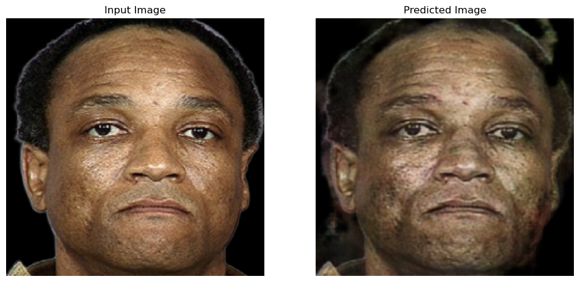
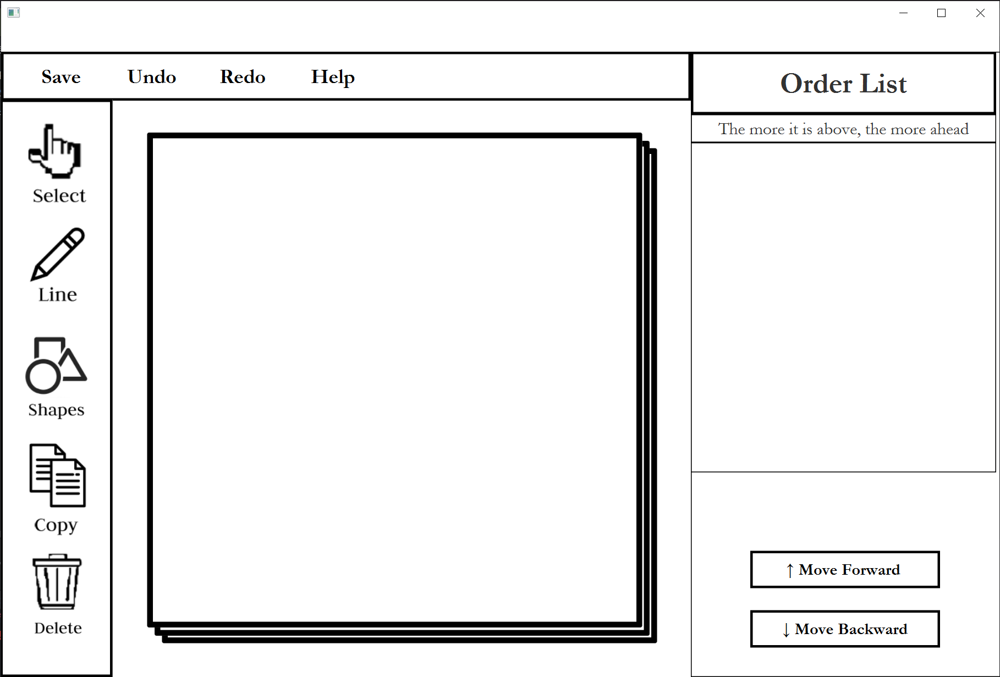

GDSC Sollution Challenge
Drug Safe
The drug problem is serious worldwide. It is a project that helps inform and prevent the severity and risk of drug addiction to solve these issues and create a healthier society. DrugSafe provides predictions of the risk of drug abuse and the side effects of facial aging resulting from drug abuse. It also lists drug mortality rates, interests, and types. I am responsible for processing user facial input on DrugSafe, predicting potential facial changes due to drug use, and presenting these predictions to instill caution. In this project, I am tasked with building the model using TensorFlow and deploying it using Django.
https://github.com/miinimanimo/CycleGAN-for-drug-abuse-facial-imageData Structure project
Drawing board
I implemented a drawing board using Java for this project. My specific responsibility was the implementation and debugging of shape selection, deletion, and copy functions, with a focus on debugging the selection of duplicate shapes.